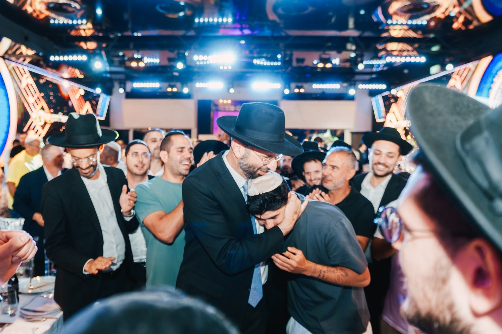
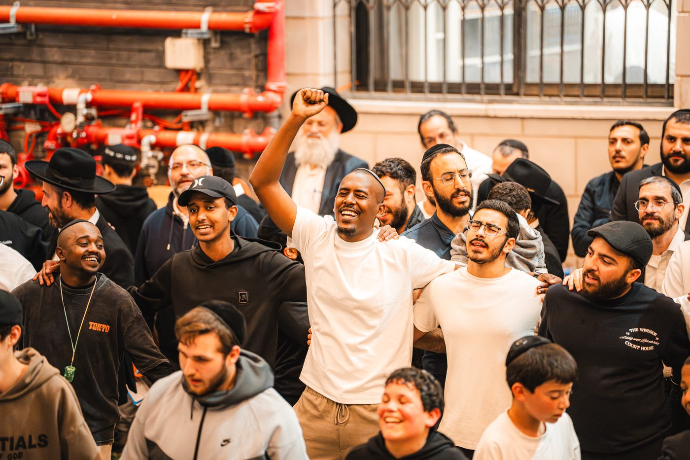
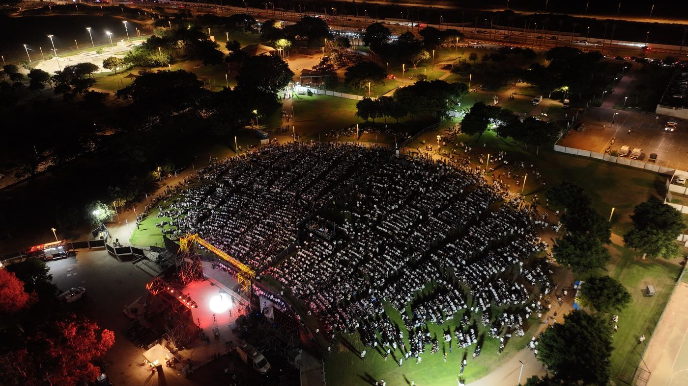

הכול התחיל בליל שבת אחד, עם שני בחורים.
לפני יותר מעשרים שנה התיישב הרב רפאל רובין ללמוד בליל שבת עם שני בחורים. השיעור הזה לא הפסיק מאז — הוא גדל מפעם בשבוע לכל יום, ומהשיעור נבנה בית שלם: קהילה, פעילות לכל הגילאים, ופעילות הנוער "הלב היהודי" שאלפי בחורים עברו בה.
הישיבה היא לא מוסד שנבנה יש מאין — היא הקומה הבאה של אותו בית.



השיעור של ליל שבת — הלב שממנו הכול צמח